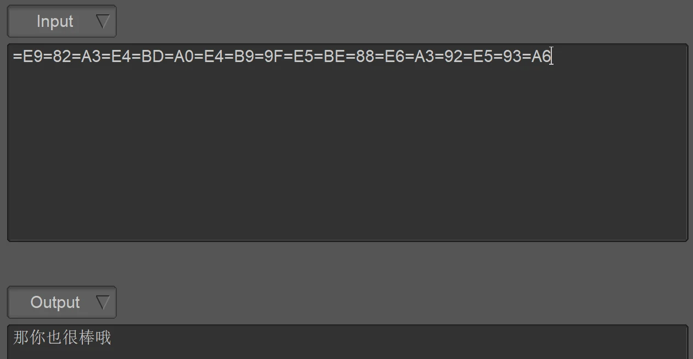
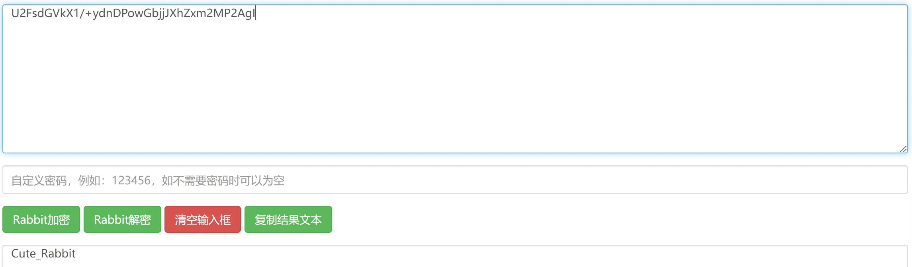
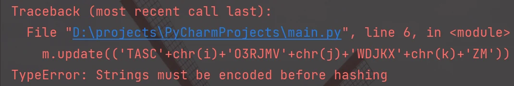
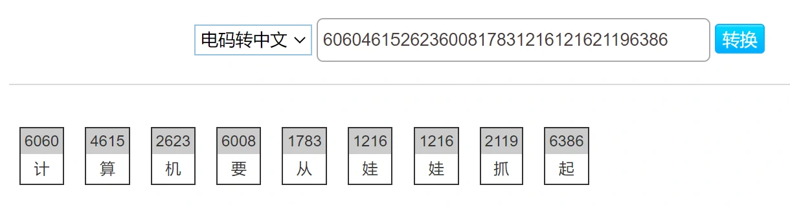
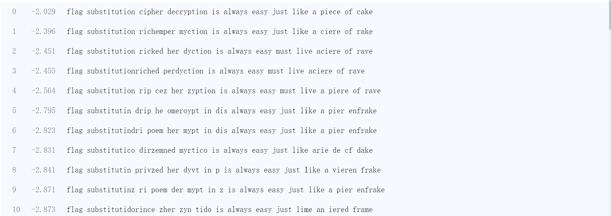
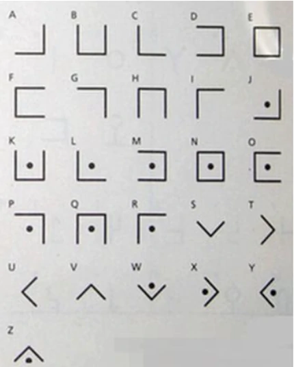
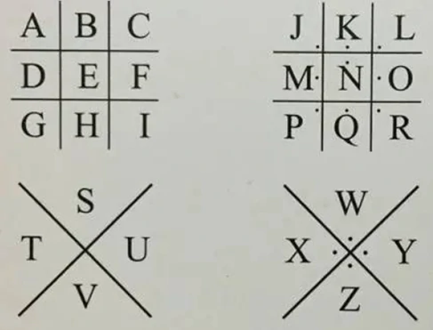
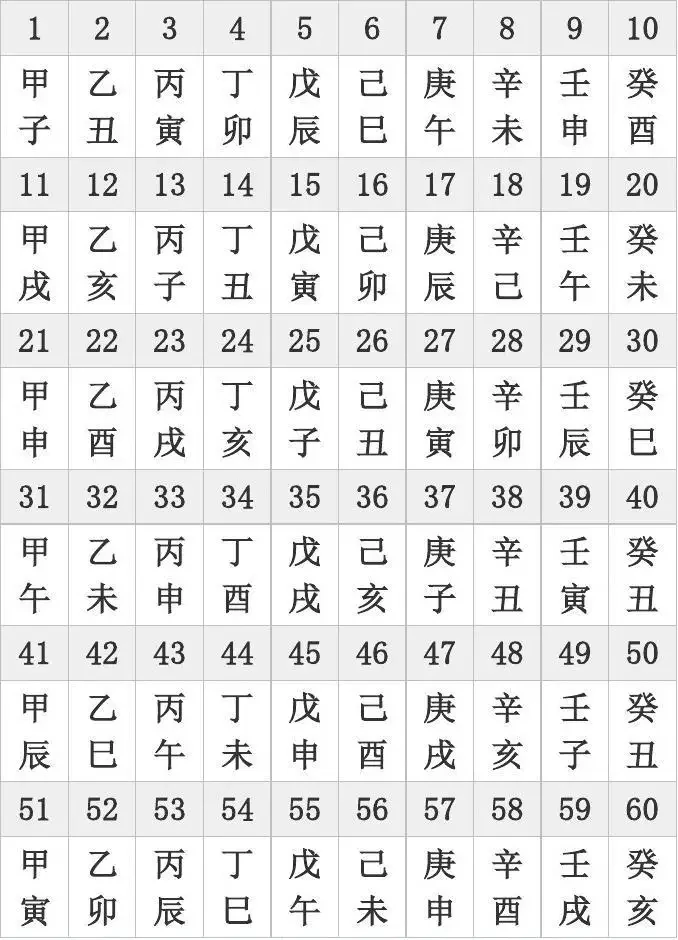

BUUCTF 刷题笔记——Crypto 1
BUUCTF 刷题笔记——Crypto 1
摩丝
本题提供一个文本文件，内含如下文本，很明显这是摩斯电码。
1
.. .-.. --- ...- . -.-- --- ..-
以下为基本字母数字与其对应的摩斯电码表，对照表逐个解码即可。
字符 电码符号 字符 电码符号 字符 电码符号 字符 电码符号 A ．━ B ━ ．．． C ━ ．━ ． D ━ ．． E ． F ．．━ ． G ━ ━ ． H ．．．． I ．． J ．━ ━ ━ K ━ ．━ L ．━ ．． M ━ ━ N ━ ． O ━ ━ ━ P ．━ ━ ． Q ━ ━ ．━ R ．━ ． S ．．． T ━ U ．．━ V ．．．━ W ．━ ━ X ━ ．．━ Y ━ ．━ ━ Z ━ ━ ．． 0 ━ ━ ━ ━ ━ 1 ．━ ━ ━ ━ 2 ．．━ ━ ━ 3 ．．．━ ━ 4 ．．．．━ 5 ．．．．． 6 ━ ．．．． 7 ━ ━ ．．． 8 ━ ━ ━ ．． 9 ━ ━ ━ ━ ． 解码结果为 ILOVEYOU
password
本题提供的文本内容如下，需要我们根据已有信息猜密码。
1
2
3
4姓名：张三
生日：19900315
key格式为key{xxxxxxxxxx}密码共十位，已有信息可作为密码的有 zhangsan 以及生日数字序列 19900315，因此对该信息的全部或者部分提取并排列组合便可得出密码，当然本题较为简单，密码为 zs19900315。
变异凯撒
本题提供的文本内容如下，并提示这是变异凯撒。
1
2加密密文：afZ_r9VYfScOeO_UL^RWUc
格式：flag{ }凯撒密码只是进行简单的操作操作，但是上述密文出现了数字以及 _、^ 等特殊字符，因此很可能是依照 ASCII 码表的移位操作。由于格式固定，即前五位为 flag{ 五个字符，可借此找出规律。
明文字符(码值) 密文字符(码值) 差值 f(102) a(97) 5 l(108) f(102) 6 a(97) Z(90) 7 g(103) _(95) 8 {(123) r(114) 9 由上述表格中的数据可确认加密方式为按 ASCII 码表进行位移且位移大小逐个递增。
那写个脚本反推一下就行了。
1
2
3
4
5
6
7
8
9str = "afZ_r9VYfScOeO_UL^RWUc"
n = 5
flag = ""
for i in str:
flag += chr(ord(i) + n)
n += 1
print(flag)得出 flag 为 flag{Caesar_variation}。
Quoted-printable
本题提供的文本内容如下，提示为 Quoted-printable 编码。
1
=E9=82=A3=E4=BD=A0=E4=B9=9F=E5=BE=88=E6=A3=92=E5=93=A6
- Quoted-printable 编码每三位表示一字节的数据，等号后即为两位十六进制数，可直接对应于该字节的数据。由于大部分用于非 ASCII 码表中的可打印字符，因此手算不现实，直接工具解码即可。 
解码出的结果为 那你也很棒哦。
Rabbit
本题提供的文本内容如下，提示为 Rabbit 加密。
1
U2FsdGVkX1/+ydnDPowGbjjJXhZxm2MP2AgI
有意思的加密方法，了解密文特征即前缀 U2FsdGVkX1 即可。剩下的直接丢进 解密网站 就行。
解密的结果为 Cute_Rabbit
篱笆墙的影子
本题提供的文本如下，提示篱笆墙的影子，根据密文样式及 flag 的默认前缀 flag{ 合理推测标题暗示栅栏密码。
1
felhaagv{ewtehtehfilnakgw}
所谓栅栏密码，就是把要加密的明文分成 N 个一组，然后循环把每组的首个字符取出来，形成一段无规律的话。观察可知 N 为 2 即可提取出 flag，也就是取一个字符后隔一个字符再取，然后循环直至取完所有字符。因此 falg 为 flag{wethinkwehavetheflag}。
RSA
本题提供的文本如下，要求解密 RSA。
1
2在一次RSA密钥对生成中，假设p=473398607161，q=4511491，e=17
求解出d作为flga提交有了 和 值就可以求，值为。由于 满足，其他条件都已知，所以 值就可以很容易求
了吧？ 写个脚本来算。1
2
3
4
5
6
7
8
9
10import gmpy2
p = 473398607161
q = 4511491
e = 17
phi_n = (p - 1) * (q - 1)
d = gmpy2.invert(e, phi_n)
print(d)解出 值为。
丢失的MD5
本题提供一段 Python 代码。
1
2
3
4
5
6
7
8
9import hashlib
for i in range(32,127):
for j in range(32,127):
for k in range(32,127):
m=hashlib.md5()
m.update('TASC'+chr(i)+'O3RJMV'+chr(j)+'WDJKX'+chr(k)+'ZM')
des=m.hexdigest()
if 'e9032' in des and 'da' in des and '911513' in des:
print des由于是 Python2 代码，换成 Python3 环境运行需要为 print() 函数加上括号。尝试执行程序，发现报错了。
提示在计算哈希值之前需要对数据进行编码，因此将待加密的明文字符串加上编码操作即可，修改代码如下，建议指定编码为 utf-8，以免出现默认编码的问题。
1
2
3
4
5
6
7
8
9
10import hashlib
for i in range(32,127):
for j in range(32,127):
for k in range(32,127):
m=hashlib.md5()
#m.update(('TASC'+chr(i)+'O3RJMV'+chr(j)+'WDJKX'+chr(k)+'ZM').encode())
m.update(('TASC'+chr(i)+'O3RJMV'+chr(j)+'WDJKX'+chr(k)+'ZM').encode("utf8"))
des=m.hexdigest()
if 'e9032' in des and 'da' in des and '911513' in des:
print(des)计算结果为 e9032994dabac08080091151380478a2，实测该值即为 flag，所以本题考的是编程。
Alice与Bob
本题考查对 的质数分解，分解出后组合进行 md5 加密即可。质数分解使用 yafu 工具完成即可，分解结果为。
1
2
3
4
5
6
7
8
9
10
11
12
13
14
15
16
17命令行>yafu-x64.exe factor(98554799767)
fac: factoring 98554799767
fac: using pretesting plan: normal
fac: no tune info: using qs/gnfs crossover of 95 digits
div: primes less than 10000
fmt: 1000000 iterations
Total factoring time = 0.0089 seconds
***factors found***
P6 = 966233
P6 = 101999
ans = 1将 进行 md5 加密即可，加密结果为 d450209323a847c8d01c6be47c81811a。
大帝的密码武器
本题提供一个 zip 文件，由于没有后缀名，因此无法打开，按提示修改后缀为 zip 即可。包含两个文本文件，其内容如下。
1
2
3
4
5
6
7题目：
公元前一百年，在罗马出生了一位对世界影响巨大的人物，他生前是罗马三巨头之一。他率先使用了一种简单的加密函，因此这种加密方法以他的名字命名。
以下密文被解开后可以获得一个有意义的单词：FRPHEVGL
你可以用这个相同的加密向量加密附件中的密文，作为答案进行提交。
密文：
ComeChina即使用凯撒密码加密，但是偏移值需要自行求出，依据为 FRPHEVGL 解密后为有意义的单词。部分不同偏移值对应的明文如下表，但偏移为 13 时解密后为单词 security，因此偏移为 13。
偏移值 明文 2 DPNFCTEJ 3 COMEBSDI 4 BNLDARCH 5 AMKCZQBG 6 ZLJBYPAF 7 YKIAXOZE 8 XJHZWNYD 9 WIGYVMXC 10 VHFXULWB 11 UGEWTKVA 12 TFDVSJUZ 13 SECURITY 使用测算出来的偏移量 13 对题给密文进行解密操作后可得 PbzrPuvan，即本题答案。
rsarsa
本题提供文本如下，给出 的值让我们求明文。
1
2
3
4
5
6
7
8
9Math is cool! Use the RSA algorithm to decode the secret message, c, p, q, and e are parameters for the RSA algorithm.
p = 9648423029010515676590551740010426534945737639235739800643989352039852507298491399561035009163427050370107570733633350911691280297777160200625281665378483
q = 11874843837980297032092405848653656852760910154543380907650040190704283358909208578251063047732443992230647903887510065547947313543299303261986053486569407
e = 65537
c = 83208298995174604174773590298203639360540024871256126892889661345742403314929861939100492666605647316646576486526217457006376842280869728581726746401583705899941768214138742259689334840735633553053887641847651173776251820293087212885670180367406807406765923638973161375817392737747832762751690104423869019034
Use RSA to find the secret message由已给值直接写个脚本进行计算即可。
1
2
3
4
5
6
7
8
9
10
11
12
13import gmpy2
p = 9648423029010515676590551740010426534945737639235739800643989352039852507298491399561035009163427050370107570733633350911691280297777160200625281665378483
q = 11874843837980297032092405848653656852760910154543380907650040190704283358909208578251063047732443992230647903887510065547947313543299303261986053486569407
e = 65537
c = 83208298995174604174773590298203639360540024871256126892889661345742403314929861939100492666605647316646576486526217457006376842280869728581726746401583705899941768214138742259689334840735633553053887641847651173776251820293087212885670180367406807406765923638973161375817392737747832762751690104423869019034
phi_n = (p - 1) * (q - 1)
n = p * q
d = gmpy2.invert(e, phi_n)
m = gmpy2.powmod(c, d, n)
print(m)计算结果为。
Windows系统密码
题目给了一个 pass.hash 文件，其内容如下，文件名暗示均为哈希值。
1
2
3
4Administrator:500:aad3b435b51404eeaad3b435b51404ee:31d6cfe0d16ae931b73c59d7e0c089c0:::
ctf:1002:06af9108f2e1fecf144e2e8adef09efd:a7fcb22a88038f35a8f39d503e7f0062:::
Guest:501:aad3b435b51404eeaad3b435b51404ee:31d6cfe0d16ae931b73c59d7e0c089c0:::
SUPPORT_388945a0:1001:aad3b435b51404eeaad3b435b51404ee:bef14eee40dffbc345eeb3f58e290d56:::由于这些值均使用冒号分割为了八段 32 位的序列，大概率为 md5 算法，因此逐个进行解密，第四段成功解出 flag 为 good-luck。
信息化时代的步伐
本题提供文本内容如下，提示为清后数十年一位伟人说的话，且为一串中文。
1
606046152623600817831216121621196386
纯数字序列，合理猜测为中文电码，利用在线工具直接加密结果为计算机要从娃娃抓起。邓小平说的。

凯撒？替换？呵呵!
题目提供一串类似 flag 形式的字符串，标题提示应该又是凯撒？
1
MTHJ{CUBCGXGUGXWREXIPOYAOEYFIGXWRXCHTKHFCOHCFDUCGTXZOHIXOEOWMEHZO}
测试了所有偏移值后仍无对应 flag 的值出现，因此应该为进阶款的凯撒，使用 在线工具 进行爆破。参考条件为 mthj 解密后为 flag，结果如下，其中仅第一条为可读明文。
因此解密明文如下：
1
flag{substitutioncipherdecryptionisalwayseasyjustlikeapieceofcake}
萌萌哒的八戒
本题提供一张图片如下，包含一串奇怪的密文，由猪元素推测为猪圈密码。
猪圈密码就很有意思了，原理如下图所示，不同符号对应不同字符，参考字符表进行解密即可。

解密后的明文为 whenthepigwanttoeat。
传统知识+古典密码
本题含有两个文本文件，内容如下。
1
2
3
4
5小明某一天收到一封密信，信中写了几个不同的年份
辛卯，癸巳，丙戌，辛未，庚辰，癸酉，己卯，癸巳。
信的背面还写有“+甲子”，请解出这段密文。
key值：CTF{XXX}首先解决传统知识的问题，在六十甲子中辛卯，癸巳，丙戌，辛未，庚辰，癸酉，己卯，癸巳分别对应序号为 28、30、23、08、17、10、16、30，加一甲子就是加 60，则数字序列又变成了 88、90、83、68、77、70、76、90。对应于 ASCII 码表中也就是字符串 XZSDMFLZ。
至于古典密码主要就是凯撒与栅栏了，由于对此没有任何提示，因此只能挨个试。
这也太过分了。 最终经过栅栏密码的 4 栏加密以及凯撒密码的 5 偏移得到的稍微顺眼的字符串 shuangyu 即为答案。
总结
尝试接触这么些个密码学的题目，总体来说并没有接触到特别复杂的考题，但是却了解到了相当多的加密算法。又多又杂的算法，虽然大多都有工具来帮助完成，但是光是识别算法类型就够呛了。很开心自己并不需要去研究去开发加密算法，仅仅只需要用好别人的工具就能完成大部分工作。
BUU 上的练习题到这各个方向我就都路过了一遍了，虽然对个人技术并无多少提升，但总归是对整体有了更深入的认识。各方向的试水刷题就到此为止了，不过，这也才刚刚开始，接下来就是日常刷题学习了。